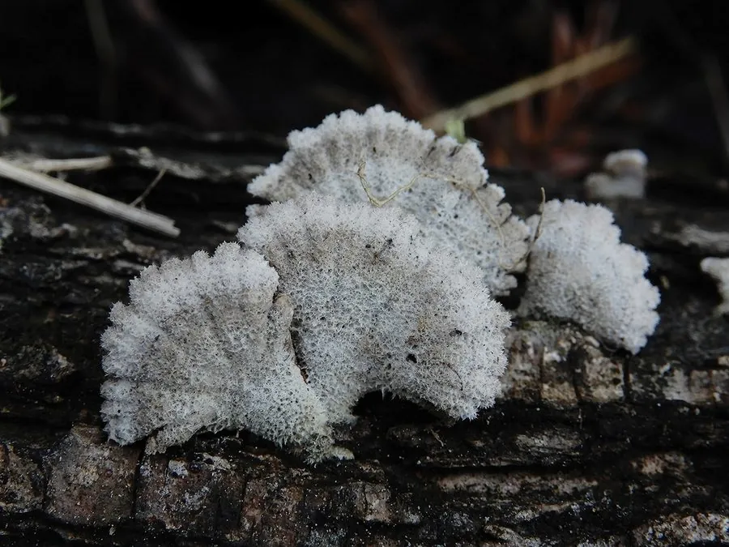

真菌 · 真菌界
裂褶菌 Schizophyllum commune

裂褶菌的菌盖扇形、表面密生白色绒毛，菌褶沿边缘纵裂成两半，是世界分布最广的真菌之一，幼时可食。
- 分类
- 门担子菌门纲伞菌纲目伞菌目科裂褶菌科属裂褶菌属
- 栖息环境
- 枯木、倒木、树桩与木材构件上，适应力极强
- 地理分布
- 世界性分布，从寒带到热带均有，中国各地常见
- 保护级别
- 暂无评估（野生食用菌）
物种志
裂褶菌是担子菌门裂褶菌科的真菌，子实体小，呈扇形、贝壳状或肾形，直径 1–4 cm，无柄或短柄，侧生于木上。菌盖表面灰白色至灰褐色，密生白色或灰色的绒毛；菌肉薄而韧。菌褶白色或灰白色，从基部放射状排列，最特别的是每条菌褶沿边缘纵裂成两半，像被从中剖开，因此得名“裂褶菌”。
裂褶菌是世界分布最广的真菌之一，从寒带到热带、从森林到城市都能找到，常生于枯木、倒木、树桩甚至木材构件上，靠分解木质素和纤维素生长。它耐干燥，干燥后遇水能迅速恢复生长。裂褶菌幼嫩时可食，云南等地有采食习惯，干制后称“白参”，可炖汤、炒食；它含有多糖等成分，民间也作药用。裂褶菌还是研究木材腐朽和真菌遗传的模式材料。
形态与习性
- 子实体扇形或贝壳状，直径 1–4 cm
- 菌盖灰白色至灰褐色，密生白色绒毛
- 菌褶沿边缘纵裂成两半
- 食用性幼嫩时可食，干制称“白参”
- 生境枯木、倒木与木材构件
- 分布世界性广布
趣味知识
- 裂褶菌的每条菌褶都沿边缘纵裂，像被剖成两半，名字由此而来。
- 它是世界分布最广的真菌之一，几乎哪里都能找到。
- 裂褶菌干制后叫“白参”，云南等地有采食和炖汤的习惯。